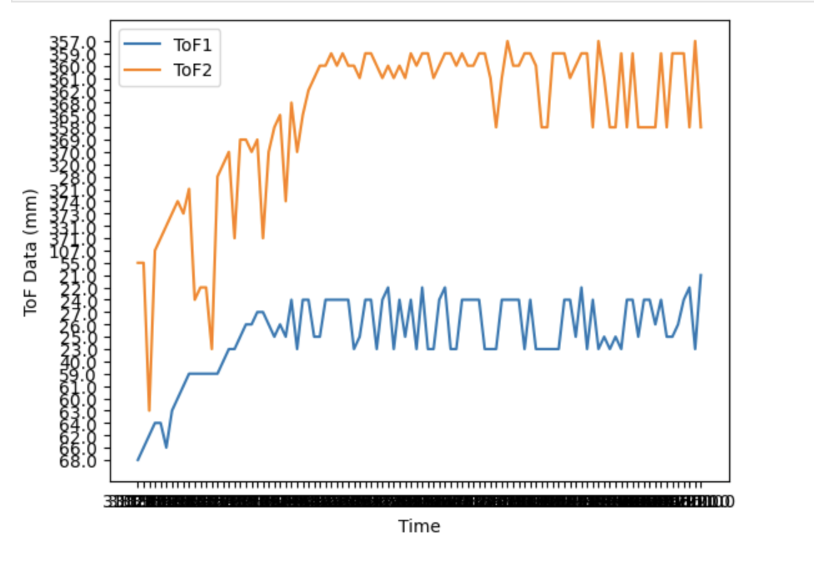
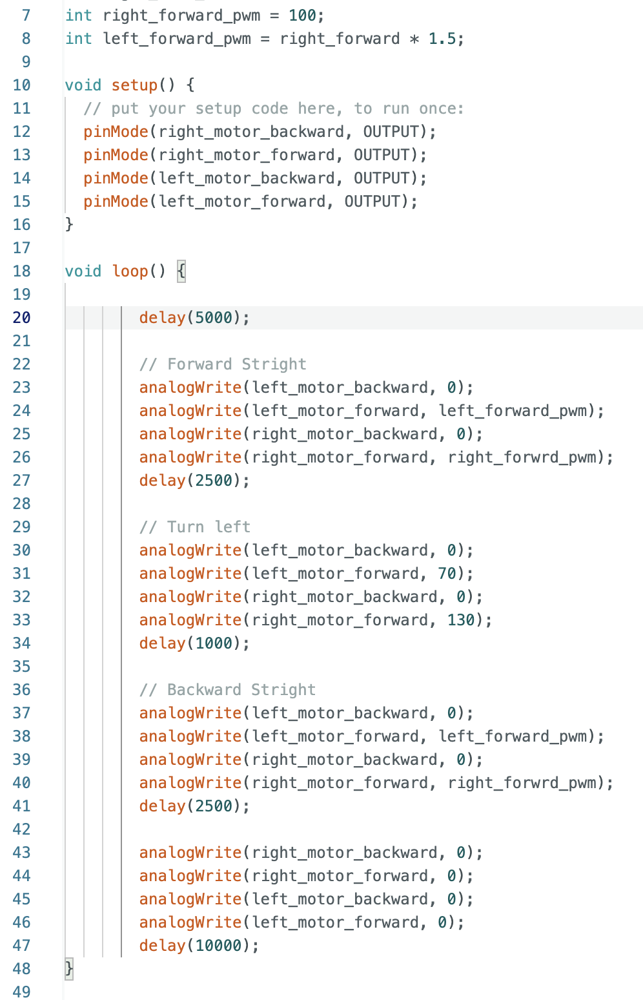

Yixin Zang
I am an ECE MEng Student at Cornell University, interested in Embedded Systems, Control, and Robotics
I am an ECE MEng Student at Cornell University, interested in Embedded Systems, Control, and Robotics


The goal of Part I of the lab was to install Arudino IDE and created required Virtual envionment settings. Tested the built-in Arduino script examples to verify the functionlity of the Artemis board. In Part II, by introudcing Bluetooth Low Energy(BLE), the Artemis board was able to establish a communication channel with the computer including sending, receving information. Jupyter Notebook was operated on the pc end and Arduino code was operated on the Artemis board end. The board advertised the MAC address and Universal Uniqle Identified(uuid) to make the connection with the computer.
Tested the built-in LED on the Artemis board by using Blink-it-Up sketch from the exmaple files
In this task, the board successfully transmitted the messages through the Serial port. It generates echo output based on the user inputs.
This task demonstrated the changing of temperature measured by the built-in temperature sensor. The reading values used the analog pin. There are temperature fluctuation when the board was touched by fingers.
In this example, the built-in microphone output was operating to constantly to detect the frequency of the sound in real-time using FFT. The captured loudest frequencies are shown in the picture

Besides testing the output of the loudest frequencies, by introducing an if statement, the Artemis board was able to turn the LED on when Note A was played. The frequencies of Note A are 440Hz and 880Hz. A plus/minus 10Hz range was implemented to have some error tolerance.
In order to operate the Bluetooth Low Energy Peripheral, the python vesion was checked and updated. A virtual environment was established to have an independent workspace. A codebase was downloaded and placed in the virtual envionment directory. The virtual environment was activated and Jupyter Notebook was initialized from the terminal. In Arduino IDE, the required BLE libraries were installed and the base sketch was uploaded to the Artemis board. In the Serial Monitor, the board's MAC address was shown below.

In addition, the board's MAC address was copied and pasted to the connection.yaml file in the Jupyter Notebook end. Besides MAC address, an universal uniqle identification(UUID) was generated and changed correspondingly in the connection.yaml file. Both settings guaranteed the board did not connect to the other boards and establish the connection via Bluetooth with the computer.

In this task, the function of ECHO command enabled the board to send the same string with appended contents "Robot says->" back to the computer after the string was sent from the computer. The string was sent from the Jupyter Notebook using Python and the sendcommand was deployed. The ECHO command was developed in the Arduino IDE.

This command assisted the user to collect the time data from the board. The function get.milli() was used in the Arudino to generated the time value. The value was then sent back to the computer as a string variable and printed in the Jupyter Notebook


A notification handler function was defined below. It was set as a callback function that operated in the background. When the board sent a message,
the notification handler would receive the data and print it. Therefore, the ble.receive method would be replaced by the notification handler since the handler was able to receive board's messages automatically.
In this task, the goal was receving the time data from the board immediatedly in a certain amount of time and used notification handler to process the time collection and print the time values. As shown in the video below, when the board generated the time data, the notification handler printed the value synchronously. In the video, there were 211 time values recevied by the computer in 5 seconds. The datarate was 42.2 data per second.
In this section, the time stamp value was stored in an array using STORE_TIME_DATA command in the Arudino IDE first and then operated the SEND_TIME_DATA command to push all the time array elements to the computer via notification handler. The whole process divided the time value communication process into two sectors: data generation and data transimission.
Additionally, the temperature data was required to collect at each time stamp. The built-in getTempDegC() function was implemented to provide the temperature value in Celsius. There were two arrays in the GET_TIME_TEMP command. After compeleting the collection process, the two arrays were sent back to the computer as a list of strings. It was seperated via split() method in Python to extract the time and temperature information and displayed the values.
The major difference between the two methods is the transimission strcture. In task 4, time data generation and transimission occurred at the same process. In task 5, the time data was collected and stored in an array and implemented another command to transmit each element to the computer. The advantage of the second method is that it reduces the delay for the string transmission during the generation process, which improve the data rate performance. The disadvantage of the array method was a fixed delay between each time acquisition was required to avoid repeating values. The Artimes has 384kB RAM.
Convert the RAM capacity to bytes (1 kB = 1024 bytes): 384 kB * 1024 bytes/kB = 393,216 bytes Divide the total RAM capacity by the size of each data point: 93,216 bytes / 1 byte/character = 393,216 characters
In order to have a visualized information about the relation between data rate and data size, a command TEST_DATARATE was developed. It simply returned the recevied Bytes to the computer. The computer had two timers: startTime and endTime. A range from 0 to 120 Bytes with 10 Bytes increment test list was created to generated the results for the data visualization. The graph is shown below. Based on the graph, overall the data rate has a positive relation with the datasize. Therefore, larger datasize can reduce the overhead with the RAM constraints.

According to the Task 4 video, the time values and the number of values collected were the same and there were no missing values based on the comparision between computer output and the Serial monitor. The reliability of the data transimission from the Artemis board to the computer was confirmed.
In this lab, the objective is to implement the Inertia Measurement Unit ICM20948, collect and optimize the movement data from
accelerometer and gyroscope respectively. Analyze the data behavior in frequency domain. The lab started fromo the sensor connection as shown below.

The IMU sensor was connected to the Artemis board with the QWIIC cables. By executing the example code, the generated movement data were shown in the Serial port correspondingly
According to the manufacturing specification, the address value AD0_VAL was changed from 1 to 0 to match the last digit of the address from the IMU board.
In order to collect the accelerometer pitch and roll data, the two equations were used to calculate the rotations.
By rotating the IMU, the pitch and roll data were reflected and displayed in the Serial Plotter as seen below. The changing of orientation/angle was visualized and shown the sinusoidal patterns
To improve the accuracy of the data, the two-point calibration was implemented. The main idea was to calculate the caonversion factor based on the expected reference values and the actual outputs. The calibration function was seen below.
Before the data of accelerometer optimized, a Fourier Transform Spectrum analysis was conducted to determine the cut off frequency and compared the outcomes of the low-pass filter implementation. The blue plots displayed the pitch data frequency specturm. Clearly, without the low-pass filter, the raw data was quite noisy. The y axis scaled differently in the two plots. The amplitude fluctuation was reduced with the low pass filter. Based on the specturm, the cut-off frequency was set to 4Hz, which calculated the alpha value to be 0.408.
Similarly, the roll data was optimized with the low-pass filter as shown below, the noisy decreased and the signal became more consistent with less spikes
The gyroscope was implemented differently than the accelerometer. It measures angular velocity, so the approach involved multiplying the reading by the time step at which the control loop ran. This method generated positional angles with relatively low noise compared to the accelerometer data. However, the resulting angles tended to drift from their initial values gradually and the mistakes would be accumulated because of the integration.
To combine the accelerometer and gyroscope data and output a more stable signal, a complimentary filter was implemented, which had a weight varaible alpha. In the arduino, the variable was called weight to determine the ratio of the data used from either accelerometer or gyroscope. In this case, the weight was set 0.1 so that more gyroscope data was used since the accelerometer brough some noise to the output. With the complimentary filter, the output signal was smoother and less cumulative errors.
In order to increase the data collection performance, all the delays and serial prints were removed from any loops. The sampling rate increased to 35Hz. The PC end could receive the time stamp value, roll and pitch from accelerometer and gyroscope at the same time.
In this lab, the goal was to implement two distance sensors and connect them to the Artemis board. The detected distance data was analyzed, different sensor modes were tested, and a sensor placement design concept was discussed.
(1) I2C Sensor Address: According to the VL53L1X model datasheet, the I2C address is shown as 0x52. After uploading the "Wire-I2C" example sketch, the address was identified as 0x29 from the Serial monitor. By converting 0x29(00101001) and 0x52(01010010) to binary, we could find that the address from the serial monitor is the 1 bit right-shifted I2C address. The least significant bit was used to determine the status of reading or writing.
(2) Multi-Sensor Compatibility: In order to collect front and rear distance readings simultaneously, the I2C address of the ToF sensor must be differentiated. By modifying the address of one of the ToF sensor to 0x30 in Arduino, the address compatibility issue was solved. The code is shown below.
(3) ToF Sensor Placement:After playing with the robot in lab2, one fact was determined that the robot was fliping 180 degrees relatively easily. Therefore, the field of distance measurement should have coverages at the front and rear sides, which provide a comprehensive distance information about the robot. The distance mode for each ToF sensor can be adjust and was discussed later in the lab
To facilitate the lab procedures, a ToF connection sketch was created as the reference for soldering.
In this part, the ToF sensor pins were soldered to a QWIIC cable. According to the QWIIC datasheet, the red wire was soldered to VDD pin, and the black cable was soldered to GND pin. SDA and SCL were soldered to the ToF sensor pins respectively. For the second sensor, the XSHUT pin was soldered directly to a GPIO pin 8 from the Artemis board so that the I2C address could be changed. After compeleting ToF sensor soldering, two sensors were connected to the QWIIC break out board.


To examine the accruacy of the sensor, the tested mode was set to short distance. Under short distance mode, the range of distance is 1.3 meters. The tested range is from 800mm to 100mm. Based on the graph below, the ToF sensor has an excellent accuracy performance in short distance mode since the measured dataset has a high overlaping area with the reference dataset. At current stage, the short distance range provides a relatively solid accuracy and distance coverage. Therefore, ToF sensor should implement short distance mode in later labs according to the analysis above.
As mentioned in the prelab section, to implement two ToF sensors and receive two different distance readings at the same time, the I2C address was required to change. After modified the I2C address, the seperated readings were displayed on the Serial monitor.

To leverage the ToF sensor reading speed, the data ready were checked in the loop for two sensors respectively . The readings were generated once the data was ready. stopRanging and clearInterupt commands were removed to reduce the delay. Two time stamps were used to calculate the loop rate, which was 8ms average. The possible limiting factors were serial print to the monitor and distance data acquisition time.
Similar to lab2, the ToF sensor data was required to transmit to the computer via BLE. A case called GET_TOF was developed to collect the ToF data and send the arrays via BLE. By generating the plot, we could see the ToF readings were visualized and transmitted successfully.
Infrared light, being invisible, permeates our daily environment and can significantly influence infrared sensors. Thus, when designing such sensors, it is imperative to select a specific wavelength of infrared light to minimize interference. Moreover, it is advisable to avoid deploying these sensors in areas with strong light sources. The TOF sensor, particularly, tends to exhibit superior performance under low-light conditions. In the experimentation conducted with various reflective surfaces, minimal impact on the sensor's results was observed irrespective of the color of the surface. While darker objects theoretically absorb more light and should produce less return energy, this effect was not evident in practice. Notably, the sensor demonstrated the ability to penetrate glass-like surfaces, enabling measurement of the distance to objects situated behind the glass, which is undesirable. This issue may be less prevalent with ultrasonic distance sensors due to the differing properties of electromagnetic and mechanical waves.
The goal of this lab was to integrate two dual motor drivers to the Artemis and connect dc motors to implement the open loop control of the robot. The motors were triggered by PWM signals to control the motion.
(1) Assembly connection diagram: As the pictures shown below, the actual wiring process was based on the designed connections. As discussed in the lecture, by shorting the four pairs of pin: BIN1 and AIN2, BIN2 and AIN2, BOUT1 and AOUT2, BOUT2 and AOUT2 , the artemis was able to utilize two pins to conect the motor driver and control the motor, also increased the current two times greater than the original design. All the input pins were soldered to the Artemis board using pin 13, 12, 6, and 7. According to the datasheet of Artemis nano, except pin 8 and 10, other I/O pins are capable to generate PWM signals. In order to create the bridge between pin pairs, several short length wires were soldered to connect them together. Following the diagram, the motor battery was connected to the GND and VIN pins for both motor drivers in series.

(1) Two Power Supply: The main reason of using two 850mAh batteries for the motors and the Artemis board independently was to isolate and protect the system from potential interferences. The motors have relatively greater power draw from the battery. The second battery powering the Artemis can maintain the remote controllability of the robot. The design seperates the control module and acturator module to avoid unexpected Artemis shutdown due to battery poewr depletion.
After compeleting the motor driver soldering, the verification of PWM was required to check that PWM signal was able to be output and recevied successfully . In order to implement the verification, the motor driver was powered by an external power supply with the 3.7V output, which is the same voltage output as the battery. The ground pin was hooked with the power supply ground cable. The input pin from the motor driver was connected to the oscilloscope. The PWM generation code was uploaded to the Artemis board. It initalized the GPIO values with the corresponding soldered pins. The analogWrite() function generated a PWM signal from the board to the motor driver. The duty cycle was set to 127/255, which provided an average of 50% output voltage. By verifing the wave form from the oscilloscope, there was half of the time the voltage was set to high. Therefore, the PWM signal matched the expected value.


After assessing the PWM signal generation, the original control board was replaced and the motor driver was soldered to the Artemis and motor with designated pins. To test the motor functionality, the below code was uploaded to the Artemis to check if the motor could rotate clockwisely and counter clockwisely. The motor spining speed was determined by the duty cycle. The value was set to 100 and the motor was spining relatively fast. The video demonstrated the motor was able to rotate in two directions properly.
The left motor was soldered to the motor driver and the Artemis after the right motor was verified. The wires and components were organized and firmly mounted to the chassis. The layout of the robot is shown below.
To better understand the relation between motor torque and PWM value, the minimum limit was explored. After multiple testing, the lowest values to move the robot for right and left motors were determined as 25 and 36 respectively.
The calibration process was conducted firstly by driving the robot in straight line for roughtly 2 feet. Due to nature of torque difference between two motors, the same PWM value did not generate the same torque. Therefore, when both PWM pins were set to 100, the robot behaved to turn right. Based on this observation, the right motor generated larger torque than the left motor. The left motor PWM value was added 10 for the first three experiments. The right-turning trend had reduced. The PWM increment was changed to 5 for each experiment. The left PWM value was set to 150 in the end, which was capable to provide similar torque as the right motor. The ratio of left motor PWM and the right motor PWM was set to 1.5. According to the video, the robot was driving a straight line for around 9 bricks, which is roughly 270cm. Thus, the calibration met the straight line requirements.
The open loop control was implemented by controlling the car to forward, rotate and forward to the starting line. The video demonstrated the robot was able to execute the preset commands properly.
(1) PWM mannual configuration discussion: As the frequency reading shown from the oscilloscope, the default PWM frequency is 182Hz. The PWM frequency is able to support robot fast executions, which is shown in the above open loop control video. The PWM frequency could be modified in Arudino. However, the default frequency is generated by the clock. It is a hardware signal generated by the crystal oscillator. Using software to configure the PWM frequency could increase the signal rate but it sacrifices the stability of the frequency.
(2) Slowest Motion PWM value discussion: In order to determine the minimal value of PWM to overcome the non-static friction of the robot, the following code was uploaded. Each iteration, the robot would reduce the PWM signal by 1 with the initial value of 30 for the right motor and 35 for the left motor. The final values were determined when the robot was fully stationary. An external clock was used to check the number of iterations for the final calculations. The final values were 24 for the right and 29 for the left motors since there were 6 iterations.
In this lab, the objective was to implement PID controller to the robot and control the robot remotely. The specific task of the position control was to drive the robot towards a wall and stop at distance around 30.4 cm. P, PI, and PID controllers were set, tuned and tested. The analysis was conducted based on the data collection and plots.
In order to achieve the data collection from the front Time-of-Flight Sensor, three arrays were instantiated first including time stamp array, ToF distance array, and PWM output array in Arudino. Each element with the same index were appended to estring and transimtted via BLE. Then the data was extracted to form lists on PC using a callback function in Python. The code is shown below.


The PID equations were developed in Arudino to reflect the updating errors and corresponding PWM output to the motors. For the intergral component, an error limit was set to achieve wind-up protection since the intergrated error could increase unexpectedly. For the PWM output, minimal outputs were determmined based on the result of deadband PWM value from lab4. When the PWM output is over the maximum 255, the value would be set to lower than 255 to protect the motor. The backward PWM had a 1.2 coefficient to speed up the hard stop action.


In order to change the Kp, Ki, Kd values more efficently and flexibly, SET_PID command was implemented in Arudino which allowed the direct update from PC


P controller was chose first for the direct proportional control and achieved the linear effect to the distance errors. A higher Kp value would cause a more aggresive response with the tradeoff of overshooting. According to the maximum distance error 4000mm and the maximum PWM value 255, a starting logical guess was around 0.06. Due to the motor torque differences, after multiple attempts, a signle P controller was applied with a Kp value set to 0.03, which successfully stopped the robot before hitting the wall.
As the video demonstrated, even though the robot stopped and adjusted the position against the wall, it had a relatively large overshooting and strong oscillation. To better visualize the robot behavior, a distance versus time plot was generated to indicate the oscillation behavior and overshooting issue.


The optimization step was then decided by introducing the derivative component to the controller. Under the PD controller, the robot converged to the setpooint wiht less overshoot by decresing the Kp value, and smoothed the oscillation considerably with the support of dampening the system.
According to the video and following plots, the robot behavior was improved with significantly shorter overshoot and less degree of oscillation. The PWM output plots between P and PD controller demonstrated a distinctive difference.


Integral control is crucial for eliminating the steady-state error that proportional control alone cannot address. Ki integrates the error over time, offering a correction that grows as long as an error exists.


The final tuning of PID controller showed the fast, stable and robust controllability of the robot. Therefore, the robot was capable to position itself at a setpoint based on the front ToF sensor only.
The purpose of extrapolation was to leverage the distance measuring efficency when the Artemis did not recieve the distance value from the ToF sensor. The estimation was based on the principle of linear estimation. The predicted point was calcualted by the slope and the corresponding time step using previous measurement data. The process increased the amount of data remarkably. The control system could adjust its outputs based on estimated current distances rather than waiting for the next sensor update. This can make the system more responsive to changes.


In this lab, we also implemented PID controller to rotate the robot to the desired orientation. The orientation was determined based on IMU readings. Multiple controllers were implemented, tested and compared.
Similar to the lab5 content, in order to escalate troubleshooting and debugging processes, time stamps, orientation readings and PWM output were recorded and sent over bluetooth


Before the implementation of PID, to simplify the PID tuning process, the Kp, Ki, Kd parameters were set to global variables which allowed a direct change from the laptop. For the constant command receiving objective, the function was placed inside the main loop. The main body of the PID controller had the similar structure as we implemented in lab5. The major difference was the measuring data came from IMU. Since the IMU recorded the acceleration rather than the actual angle. A derivative terms was added to calculate the estimated orientation. The sampling time was set to 10 seconds which was enough to the controlling action.

The P controller was first implemented and the goal was to rotate the robot 90 degrees and remain in the stationary spot. Using a P controller, the Kp value was tested and tuned. Based on the PWM output which generated based on the calculation of the error, the Kp value was set to 0.8 which provided a steady state behavior.


According to the video and plots, P controller had a relatively low response time to reach steady state and there was excessive oscillation after reaching the steady state.
The integral term was added to the controller output calculation. By introducing the integrated error over time, the response time was increased with the tradeoff of overshooting that is shown in the yaw plot. In order to prevent the integral term dominants the error term, and output, the upper limit and lower limit were set to 200 and -200 respectively. The final Kp and Ki values were 0.8 and 0.15


By bringing the derivative term to predict the errors, the oscillation were reduced. The overshooting were optimized by reducing the Ki value and increasing the Kp value. The PWM plot indicated the controlling action to smooth the control. The yaw plot also demonstrated the optimization of turning the PID parameters.


New Image Description
This course focuses on systems level design and implementation of dynamic autonomous robots. We will design a fast autonomous car and explore dynamic behaviors, acting forces, sensors, and reactive control on an embedded processor, as well as the benefit of partial off-board computation, low latency software, and noise tolerant implementation.